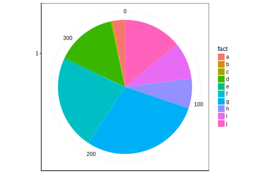

4.1 Visualisation graphique à l’aide d’un graphique en barre
4.1.1 Représentation d’un dénombration d’observations par facteur
Vous souhaitez représenter une dénombrement des différentes niveaux d’une variables facteurs. On peux exprimer dans R sous la forme
\[\sim variable \ facteur\] que l’on peut lire
\[\ en \ fonction \ de \ la \ variable \ facteur\]
Figure 2.1: Points essentiels d’un graphique en barre montrant le dénombrement des niveaux d’une variable facteur.
Les éléments indispensables à la compréhension d’un graphique en barre sont (ici mis en évidence en couleur) :
- les axes avec les graduations (en rouge)
- le label en x (en bleu)
- les niveaux de la variable facteur
Les instructions de base afin de produire un graphique en barre :
chart(e_m, formula = ~ e_mathaei) +
geom_bar()
Figure 2.2: Instructions pour obtenir un graphique en bar.
La fonction chart() requiert comme argument le jeu de donnée (dataframe, e_m), ainsi que la formule à employer ~factor(VAR). Pour réaliser un graphique en barre, vous devez ajouter la seconde fonction geom_bar().
4.1.1.1 Représentation d’un dénombrement d’observations par plusieurs facteurs
Différentes représentation sont possible pour observer des dénombrements tenant compte de plusieurs variables facteurs. Par défaut, l’argument position a pour valeur stack.
chart(diamonds, formula = ~ cut %fill=% clarity) +
geom_bar()Figure 2.3: Dénombrement de l’occurence en fonction de la variable facteur cut et de la variable clarity.
Il existe d’autres solutions en utilisant la valeur dodge ou fill pour l’argument position.
b <- chart(diamonds, formula = ~ cut %fill=% clarity) +
geom_bar( position = "dodge")
c <- chart(diamonds, formula = ~ cut %fill=% clarity) +
geom_bar( position = "fill")
ggpubr::ggarrange(b, c, common.legend = TRUE, labels = "auto")
Figure 2.4: A) Graphique en barre du dénombrement de l’occurence en fonction de la variable facteur cut et de la variable clarity avec dodge comme valeur de l’argument position . B) Graphique en barre du dénombrement de l’occurence en fonction de la variable facteur cut et de la variable clarity avec fill comme valeur de l’argument position
4.1.1.2 Pièges et Astuces
L’oeil humain perçoit plus distinctement les différences de tailles horizontales que verticales. Avec la fonction coord_flip() ajouté à votre graphique, vous pouvez ajouter une rotation des axes.
chart(e_m, formula = ~ e_mathaei ) +
geom_bar() +
coord_flip()
Figure 3.1: Graphique en barre du dénombrement de quatre variaités d’oursins.
4.1.2 Représentation d’une valeur moyenne à l’aide d’un graphe en barre.
Le graphique en barre peut etre employé afin de résumer des données numériques via la moyenne. Il ne s’agit plus de dénombrer un nombre d’occurence d’une variable facteur mais de résumer des données numériques en fonction d’une variable facteur. On peut exprimer cette relation dans R sous la forme de \[y \sim x\] que l’on peut lire : \[y \ en \ fonction \ de \ x\] ou encore \[Variable \ numérique \ en \ fonction \ de \ Variable \ facteur\]
Prenez les chiffres suivants :
1, 71, 55, 68, 78, 60, 83, 120, 82 ,53, 26Calculez la moyenne sur base de la formule de la moyenne \[\overline{y} = \sum_{i = 1}^n \frac{y_i}{n}\]
# création du vecteur
x <- c(1, 71, 55, 68, 78, 60, 83, 120, 82, 53, 26)
# Calcul de la moyenne
mean(x)## [1] 63.36364En partant d’un jeu de données, comme celui ci dessous
| len | supp | dose |
|---|---|---|
| 4.2 | VC | 0.5 |
| 22.5 | VC | 1.0 |
| 29.5 | VC | 2.0 |
| 15.2 | OJ | 0.5 |
| 20.0 | OJ | 1.0 |
| 23.0 | OJ | 2.0 |
Vous pouvez observez que ce jeu de données comprend trois variables avec une première variable portant sur le longueur des dents de cochons d’Inde, une seconde variable portant sur la supplémentation administrée ( VC, vitamine Cou OJ, jus d’orange) à ces derniers et enfin une troisième variable portant sur la dose administrée (0.5, 1, 2).
Figure 3.4: Points essentiels d’un graphique en barre résumant les données numériques d’une variable facteur.
Les éléments indispensables à la compréhension d’un graphe en barre sont (ici mis en évidence en couleur) :
- les axes avec les graduations (en rouge)
- les labels et unités des axes (en bleu)
Les instructions de base afin de produire ce graphe en barre sont :
# Importation des données
tg <- read("ToothGrowth", package = "datasets")
# Réalisation du graphique
chart(tg, formula = len ~ supp) +
stat_summary(geom = "bar", fun.y = "mean")
Figure 3.5: Instructions pour obtenir un graphique en barre indiquant les moyennes par groupe.
4.1.2.1 Pièges et astuces
4.1.2.1.1 Représentation de la moyenne et des barres d’erreurs
chart(tg, formula = len ~ supp) +
stat_summary(geom = "bar", fun.y = "mean") +
stat_summary(geom = "errorbar", fun.ymax = "mean_sd")## Warning: Computation failed in `stat_summary()`:
## could not find function "mean_sd"
4.1.2.1.2 Représentation de la moyenne
Le graphe en barre est un graphique très répandu dans le domaine scientifique malgré le grand nombre d’arguments contre lui que vous pouvez lire dans la section Pour en savoir plus. L’un des arguments le plus important est la faible information qu’il apporte.
a <- chart(ToothGrowth, formula = len ~ supp) +
stat_summary(geom = "bar", fun.y = "mean")
b <- chart(ToothGrowth, formula = len ~ supp) +
stat_summary(geom = "point", fun.y = "mean")
ggarrange(a,b, labels = "AUTO")Figure 3.7: moyenne de la croissance des dents de cochons d’inde en fonction du supplément admnistré (jus d’orange ou vitamine C.